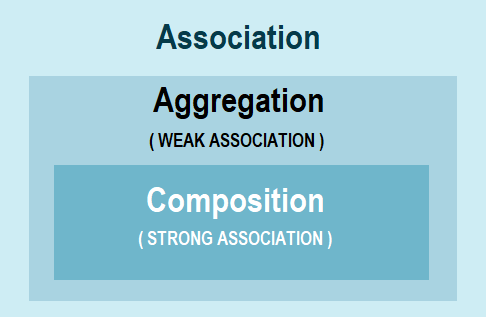

| No. | Questions |
|---|---|
| 1 | Java Functional programming |
| 2 | Java Lambda expressions |
| 3 | Java Reflection |
| 4 | Java Streams |
| 5 | Java Regular Expressions |
| 6 | Java Generics |
Nested Inner class can access any private instance variable of outer class. Like any other instance variable, we can have access modifier private, protected, public and default modifier.
Example:
/**
* Inner Class
*/
class Outer {
class Inner {
public void show() {
System.out.println("In a nested class method");
}
}
}
class Main {
public static void main(String[] args) {
Outer.Inner in = new Outer().new Inner();
in.show();
}
}
A subclass is class which inherits a method or methods from a superclass.
Example:
/**
* Sub Class
*/
class Car {
//...
}
class HybridCar extends Car {
//...
}
1. Static Class Loading:
Creating objects and instance using new keyword is known as static class loading. The retrieval of class definition and instantiation of the object is done at compile time.
Example:
/**
* Static Class Loading
*/
class TestClass {
public static void main(String args[]) {
TestClass tc = new TestClass();
}
}
2. Dynamic Class Loading:
Loading classes use Class.forName() method. Dynamic class loading is done when the name of the class is not known at compile time.
Example:
/**
* Dynamic Class Loading
*/
Class.forName (String className);
1. Runtime Class:
The java.lang.Runtime class is a subclass of Object class, provide access to the Java runtime system. The runtime information like memory availability, invoking the garbage collector, etc.
Example:
/**
* Runtime Class
*/
public class RuntimeTest
{
static class Message extends Thread {
public void run() {
System.out.println(" Exit");
}
}
public static void main(String[] args) {
try {
Runtime.getRuntime().addShutdownHook(new Message());
System.out.println(" Program Started...");
System.out.println(" Wait for 5 seconds...");
Thread.sleep(5000);
System.out.println(" Program Ended...");
} catch (Exception e) {
e.printStackTrace();
}
}
}
2. System Class:
The purpose of the System class is to provide access to system resources. It contains accessibility to standard input, standart output, error output streams, current time in millis, terminating the application, etc.
1. Using new keyword:
MyObject object = new MyObject();
2. Using Class.forName():
MyObject object = (MyObject) Class.forName("subin.rnd.MyObject").newInstance();
3. Using clone():
MyObject anotherObject = new MyObject();
MyObject object = (MyObject) anotherObject.clone();
4. Using object deserialization:
ObjectInputStream inStream = new ObjectInputStream(anInputStream );
MyObject object = (MyObject) inStream.readObject();
Immutable objects are objects that don't change. A Java immutable object must have all its fields be internal, private final fields. It must not implement any setters. It needs a constructor that takes a value for every single field.
Creating an Immutable Object:
/**
* Immutable Object
*/
public class DateContainer {
private final Date date;
public DateContainer() {
this.date = new Date();
}
public Date getDate() {
return new Date(date.getTime());
}
}
Immutable class means that once an object is created, we cannot change its content. In Java, all the wrapper classes (like Integer, Boolean, Byte, Short) and String class is immutable.
Rules to create immutable classes:
/**
* Immutable Class
*/
public final class Employee {
final String pancardNumber;
public Employee(String pancardNumber) {
this.pancardNumber = pancardNumber;
}
public String getPancardNumber() {
return pancardNumber;
}
}
Bootstrap ClassLoader is repsonsible for loading standard JDK classs files from rt.jar and it is parent of all class loaders in java. There are three types of built-in ClassLoader in Java:
1. Bootstrap Class Loader: It loads JDK internal classes, typically loads rt.jar and other core classes for example java.lang.* package classes
2. Extensions Class Loader: It loads classes from the JDK extensions directory, usually $JAVA_HOME/lib/ext directory.
3. System Class Loader: It loads classes from the current classpath that can be set while invoking a program using -cp or -classpath command line options.
/**
* ClassLoader
*/
import java.util.logging.Level;
import java.util.logging.Logger;
public class ClassLoaderTest {
public static void main(String args[]) {
try {
// printing ClassLoader of this class
System.out.println("ClassLoader : " + ClassLoaderTest.class.getClassLoader());
// trying to explicitly load this class again using Extension class loader
Class.forName("Explicitly load class", true, ClassLoaderTest.class.getClassLoader().getParent());
} catch (ClassNotFoundException ex) {
Logger.getLogger(ClassLoaderTest.class.getName()).log(Level.SEVERE, null, ex);
}
}
}
Different ways to create an object in Java
class ObjectCreationExample{
String Owner;
}
public class MainClass {
public static void main(String[] args) {
// Here we are creating Object of JBT using new keyword
ObjectCreationExample obj = new ObjectCreationExample();
}
}
class CreateObjectClass {
static int j = 10;
CreateObjectClass() {
i = j++;
}
int i;
@Override
public String toString() {
return "Value of i :" + i;
}
}
class MainClass {
public static void main(String[] args) {
try {
Class cls = Class.forName("CreateObjectClass");
CreateObjectClass obj = (CreateObjectClass) cls.newInstance();
CreateObjectClass obj1 = (CreateObjectClass) cls.newInstance();
System.out.println(obj);
System.out.println(obj1);
} catch (ClassNotFoundException e) {
e.printStackTrace();
} catch (InstantiationException e) {
e.printStackTrace();
} catch (IllegalAccessException e) {
e.printStackTrace();
}
}
}
class CreateObjectWithClone implements Cloneable {
@Override
protected Object clone() throws CloneNotSupportedException {
return super.clone();
}
int i;
static int j = 10;
CreateObjectWithClone() {
i = j++;
}
@Override
public String toString() {
return "Value of i :" + i;
}
}
class MainClass {
public static void main(String[] args) {
CreateObjectWithClone obj1 = new CreateObjectWithClone();
System.out.println(obj1);
try {
CreateObjectWithClone obj2 = (CreateObjectWithClone) obj1.clone();
System.out.println(obj2);
} catch (CloneNotSupportedException e) {
e.printStackTrace();
}
}
}
class CreateObjectWithClassLoader {
static int j = 10;
CreateObjectWithClassLoader() {
i = j++;
}
int i;
@Override
public String toString() {
return "Value of i :" + i;
}
}
public class MainClass {
public static void main(String[] args) {
CreateObjectWithClassLoader obj = null;
try {
obj = (CreateObjectWithClassLoader) new MainClass().getClass()
.getClassLoader().loadClass("CreateObjectWithClassLoader").newInstance();
// Fully qualified classname should be used.
} catch (InstantiationException e) {
e.printStackTrace();
} catch (IllegalAccessException e) {
e.printStackTrace();
} catch (ClassNotFoundException e) {
e.printStackTrace();
}
System.out.println(obj);
}
}
The Object class is the parent class of all the classes in java by default.
| Method | Description |
|---|---|
| public final Class getClass() | returns the Class class object of this object. The Class class can further be used to get the metadata of this class. |
| public int hashCode() | returns the hashcode number for this object. |
| public boolean equals(Object obj) | compares the given object to this object. |
| protected Object clone() throws CloneNotSupportedException | creates and returns the exact copy (clone) of this object. |
| public String toString() | returns the string representation of this object. |
| public final void notify() | wakes up single thread, waiting on this object\'s monitor. |
| public final void notifyAll() | wakes up all the threads, waiting on this object\'s monitor. |
| public final void wait(long timeout)throws InterruptedException | causes the current thread to wait for the specified milliseconds, until another thread notifies (invokes notify() or notifyAll() method). |
| public final void wait(long timeout,int nanos)throws InterruptedException | causes the current thread to wait for the specified milliseconds and nanoseconds, until another thread notifies (invokes notify() or notifyAll() method). |
| public final void wait()throws InterruptedException | causes the current thread to wait, until another thread notifies (invokes notify() or notifyAll() method). |
| protected void finalize()throws Throwable | is invoked by the garbage collector before object is being garbage collected. |
An optional value Optionalis a container for an object that may or may not contain a value null. Such a wrapper is a convenient means of prevention NullPointerException, as has some higher-order functions, eliminating the need for repeating if null/notNullchecks:
Optional < String > optional = Optional.of( " hello " );
optional.isPresent(); // true
optional.ifPresent(s -> System.out.println(s.length())); // 5
optional.get(); // "hello"
optional.orElse( " ops ... " ); // "hello"
In Java, a constructor is a block of codes similar to the method. It is called when an instance of the class is created. At the time of calling constructor, memory for the object is allocated in the memory.
Types of Java Constructors:
Example: Default Constructor (or) no-arg constructor
/**
* Default Constructor
*/
public class Car {
Car() {
System.out.println("Default Constructor of Car class called");
}
public static void main(String args[]) {
// Calling the default constructor
Car c = new Car();
}
}
Output
Default Constructor of Car class called
Example: Parameterized Constructor
/**
* Parameterized Constructor
*/
public class Car {
String carColor;
Car(String carColor) {
this.carColor = carColor;
}
public void display() {
System.out.println("Color of the Car is : " + carColor);
}
public static void main(String args[]) {
// Calling the parameterized constructor
Car c = new Car("Blue");
c.display();
}
}
Java constructor chaining is a method of calling one constructor with the help of another while considering the present object. It can be done in 2 ways –
this() keyword for constructors in the same class.super() keyword to call a constructor from the base class./**
* Constructor Chaining
* within same class Using this() keyword
*/
class Temp
{
// default constructor 1
// default constructor will call another constructor
// using this keyword from same class
Temp() {
// calls constructor 2
this(5);
System.out.println("The Default constructor");
}
// parameterized constructor 2
Temp(int x) {
// calls constructor 3
this(10, 20);
System.out.println(x);
}
// parameterized constructor 3
Temp(int x, int y) {
System.out.println(10 + 20);
}
public static void main(String args[]) {
// invokes default constructor first
new Temp();
}
}
Ouput:
30
10
The Default constructor
/**
* Constructor Chaining to
* other class using super() keyword
*/
class Base
{
String name;
// constructor 1
Base() {
this("");
System.out.println("No-argument constructor of base class");
}
// constructor 2
Base(String name) {
this.name = name;
System.out.println("Calling parameterized constructor of base");
}
}
class Derived extends Base
{
// constructor 3
Derived() {
System.out.println("No-argument constructor of derived");
}
// parameterized constructor 4
Derived(String name) {
// invokes base class constructor 2
super(name);
System.out.println("Calling parameterized constructor of derived");
}
public static void main(String args[]) {
// calls parameterized constructor 4
Derived obj = new Derived("test");
// Calls No-argument constructor
// Derived obj = new Derived();
}
}
Output:
Calling parameterized constructor of base
Calling parameterized constructor of derived
public class MyClass {
static{
System.out.println("outer static block..");
new MyClass();
}
private MyInner in;
{
System.out.println("outer instance block..");
//new MyClass(); //private constructor accessbile but bad practive will cause infinite loop
}
private MyClass(){
System.out.println("outer private constructor..");
}
public void getInner(){
System.out.println("outer data member function..");
new MyInner();
}
private static class MyInner{
{
System.out.println("inner instance block..");
new MyClass();
}
MyInner(){
System.out.println("inner constructor..");
}
}
public static void main(String args[]) {
System.out.println("static main method..");
MyClass m=new MyClass();
m.getInner();
}
}
class Visitor{
{
new MyClass();//gives compilation error as MyClass() has private access in MyClass
}
}
CopyOnWriteArrayList class implements List and RandomAccess interfaces and thus provide all functionalities available in ArrayList class.
Using CopyOnWriteArrayList is costly for update operations, because each mutation creates a cloned copy of underlying array and add/update element to it.
It is thread-safe version of ArrayList. Each thread accessing the list sees its own version of snapshot of backing array created while initializing the iterator for this list.
Because it gets snapshot of underlying array while creating iterator, it does not throw ConcurrentModificationException.
Mutation operations on iterators (remove, set, and add) are not supported. These methods throw UnsupportedOperationException.
CopyOnWriteArrayList is a concurrent replacement for a synchronized List and offers better concurrency when iterations outnumber mutations.
It allows duplicate elements and heterogeneous Objects (use generics to get compile time errors).
Because it creates a new copy of array everytime iterator is created, performance is slower than ArrayList.
We can prefer to use CopyOnWriteArrayList over normal ArrayList in following cases:
import java.util.concurrent.CopyOnWriteArrayList;
CopyOnWriteArrayList<String> copyOnWriteArrayList = new CopyOnWriteArrayList<String>();
copyOnWriteArrayList.add("captain america");
Iterator it = copyOnWriteArrayList.iterator(); //iterator creates separate snapshot
copyOnWriteArrayList.add("iron man"); //doesn't throw ConcurrentModificationException
while(it.hasNext())
System.out.println(it.next()); // prints captain america only , since add operation is after returning iterator
it = copyOnWriteArrayList.iterator(); //fresh snapshot
while(it.hasNext())
System.out.println(it.next()); // prints captain america and iron man,
it = copyOnWriteArrayList.iterator(); //fresh snapshot
while(it.hasNext()){
System.out.println(it.next());
it.remove(); //mutable operation 'remove' not allowed ,throws UnsupportedOperationException
}
ArrayList<String> list = new ArrayList<String>();
list.add("A");
Iterator ait = list.iterator();
list.add("B"); // immediately throws ConcurrentModificationException
while(ait.hasNext())
System.out.println(ait.next());
ait = list.iterator();
while(ait.hasNext()){
System.out.println(ait.next());
ait.remove(); //mutable operation 'remove' allowed without any exception
}
When you create String object using new() operator, it always create a new object in heap memory. On the other hand, if you create object using String literal syntax e.g. "Java", it may return an existing object from String pool ( a cache of String object in Perm gen space, which is now moved to heap space in recent Java release ), if it's already exists. Otherwise it will create a new string object and put in string pool for future re-use.
Example:
/**
* String literal
*/
String a = "abc";
String b = "abc";
System.out.println(a == b); // true
/**
* Using new()
*/
String c = new String("abc");
String d = new String("abc");
System.out.println(c == d); // false
1. Mutability Difference:
String is immutable, if you try to alter their values, another object gets created, whereas StringBuffer and StringBuilder are mutable so they can change their values.
2. Thread-Safety Difference:
The difference between StringBuffer and StringBuilder is that StringBuffer is thread-safe. So when the application needs to be run only in a single thread then it is better to use StringBuilder. StringBuilder is more efficient than StringBuffer.
Example:
/**
* StringBuffer
*/
public class BufferTest {
public static void main(String[] args) {
StringBuffer buffer = new StringBuffer("Hello");
buffer.append(" World");
System.out.println(buffer);
}
}
Example:
/**
* StringBuilder
*/
public class BuilderTest {
public static void main(String[] args) {
StringBuilder builder = new StringBuilder("Hello");
builder.append(" World");
System.out.println(builder);
}
}
The string is Immutable in Java because String objects are cached in String pool. Since cached String literals are shared between multiple clients there is always a risk, where one client's action would affect all another client.
Since string is immutable it can safely share between many threads and avoid any synchronization issues in java.
String Pool in java is a pool of Strings stored in Java Heap Memory. String pool helps in saving a lot of space for Java Runtime although it takes more time to create the String.
When we use double quotes to create a String, it first looks for String with the same value in the String pool, if found it just returns the reference else it creates a new String in the pool and then returns the reference. However using new operator, we force String class to create a new String object in heap space.
/**
* String Pool
*/
public class StringPool {
public static void main(String[] args) {
String s1 = "Java";
String s2 = "Java";
String s3 = new String("Java");
System.out.println("s1 == s2 :" + (s1 == s2)); // true
System.out.println("s1 == s3 :" + (s1 == s3)); // false
}
}
String is immutable, if you try to alter their values, another object gets created, whereas StringBuffer and StringBuilder are mutable so they can change their values.
The difference between StringBuffer and StringBuilder is that StringBuffer is thread-safe. So when the application needs to be run only in a single thread then it is better to use StringBuilder. StringBuilder is more efficient than StringBuffer.
Situations:
String object is immutable.StringBuilder is good enough.StringBuffer because StringBuffer is synchronous so you have thread-safety.Example:
class StringExample {
// Concatenates to String
public static void concat1(String s1) {
s1 = s1 + "World";
}
// Concatenates to StringBuilder
public static void concat2(StringBuilder s2) {
s2.append("World");
}
// Concatenates to StringBuffer
public static void concat3(StringBuffer s3) {
s3.append("World");
}
public static void main(String[] args) {
String s1 = "Hello";
concat1(s1); // s1 is not changed
System.out.println("String: " + s1);
StringBuilder s2 = new StringBuilder("Hello");
concat2(s2); // s2 is changed
System.out.println("StringBuilder: " + s2);
StringBuffer s3 = new StringBuffer("Hello");
concat3(s3); // s3 is changed
System.out.println("StringBuffer: " + s3);
}
}
Output
String: Hello
StringBuilder: World
StringBuffer: World
The class is StringJoinerused to create a sequence of strings separated by a separator with the ability to append a prefix and suffix to the resulting string:
StringJoiner joiner = new StringJoiner ( " . " , " Prefix- " , " -suffix " );
for ( String s : " Hello the brave world " . split ( " " )) {
, joiner, . add (s);
}
System.out.println(joiner); // prefix-Hello.the.brave.world-suffix
Reflection API in Java is used to manipulate class and its members which include fields, methods, constructor, etc. at runtime.
The java.lang.Class class provides many methods that can be used to get metadata, examine and change the run time behavior of a class. There are 3 ways to get the instance of Class class.
1. forName() method:
/**
* forName()
*/
class Simple {
}
class Test {
public static void main(String args[]) {
Class c = Class.forName("Simple");
System.out.println(c.getName());
}
}
Output
Simple
2. getClass() method:
It returns the instance of Class class. It should be used if you know the type. Moreover, it can be used with primitives.
/**
* getClass
*/
class Simple {
}
class Test {
void printName(Object obj) {
Class c = obj.getClass();
System.out.println(c.getName());
}
public static void main(String args[]) {
Simple s = new Simple();
Test t = new Test();
t.printName(s);
}
}
Output
Simple
3. The .class syntax:
If a type is available but there is no instance then it is possible to obtain a Class by appending ".class" to the name of the type. It can be used for primitive data type also.
/**
* .class Syntax
*/
class Test {
public static void main(String args[]) {
Class c = boolean.class;
System.out.println(c.getName());
Class c2 = Test.class;
System.out.println(c2.getName());
}
}
Output
boolean
Test
An interface java.util.Stream is a sequence of elements on which various operations can be performed.
Operations on streams can be either intermediate (intermediate) or final (terminal) . Final operations return a result of a certain type, and intermediate operations return the same stream. Thus, you can build chains of several operations on the same stream.
A stream can have any number of calls to intermediate operations and the last call to the final operation. At the same time, all intermediate operations are performed lazily and until the final operation is called, no actions actually happen (similar to creating an object Threador Runnable, without a call start()).
Streams are created based on sources of some, for example, classes from java.util.Collection.
Associative arrays (maps), for example HashMap, are not supported.
Operations on streams can be performed both sequentially and in parallel.
Streams cannot be reused. As soon as some final operation has been called, the flow is closed.
In addition to the universal object, there are special types of streams to work with primitive data types int, longand double: IntStream, LongStreamand DoubleStream. These primitive streams work just like regular object streams, but with the following differences:
IntFunctionor IntPredicateinstead of Functionand Predicate;sum(), average(), mapToObj().Stream < String > fromCollection = Arrays.asList ( " x " , " y " , " z " ).stream ();
Stream < String > fromValues = Stream.of( " x " , " y " , " z " );
Stream < String > fromArray = Arrays.stream( new String [] { " x " , " y " , " z " });
Stream < String > fromFile = Files.lines( Paths.get(" input.txt "));
IntStream fromString = " 0123456789 " . chars ();
Stream.builder():Stream < String > fromBuilder = Stream.builder().add (" z ").add(" y ").add(" z ").build ();
Stream.iterate()(infinite):Stream < Integer > fromIterate = Stream.iterate ( 1 , n - > n + 1 );
Stream.generate()(infinite):Stream < String > fromGenerate = Stream.generate(() -> " 0 " );
Collection and Stream?Collections allow you to work with elements separately, while streams do not allow this, but instead provides the ability to perform functions on data as one.
collect()for streams for?A method collect()is the final operation that is used to represent the result as a collection or some other data structure.
collect()accepts an input that contains four stages:
In Java 8, the class Collectors implements several common collectors:
toList(), toCollection(), toSet()- present stream in the form of a list, collection or set;toConcurrentMap(), toMap()- allow you to convert the stream to Map;averagingInt(), averagingDouble(), averagingLong()- return the average value;summingInt(), summingDouble(), summingLong()- returns the sum;summarizingInt(), summarizingDouble(), summarizingLong()- return SummaryStatisticswith different values of the aggregate;partitioningBy()- divides the collection into two parts according to the condition and returns them as Map<Boolean, List>;groupingBy()- divides the collection into several parts and returns Map<N, List<T>>;mapping()- Additional value conversions for complex Collectors.There is also the possibility of creating your own collector through Collector.of():
Collector < String , a List < String > , a List < String > > toList = Collector.of (
ArrayList :: new ,
List :: add,
(l1, l2) -> {l1 . addAll (l2); return l1; }
);
forEach()and forEachOrdered() methods?forEach() applies a function to each stream object; ordering in parallel execution is not guaranteed;forEachOrdered() applies a function to each stream object while maintaining the order of the elements.map(), mapToInt(), mapToDouble() and mapToLong() methods in Stream?The method map()is an intermediate operation, which transforms each element of the stream in a specified way.
mapToInt(), mapToDouble(), mapToLong()- analogues map(), returns the corresponding numerical stream (ie the stream of numerical primitives):
Stream
.of ( " 12 " , " 22 " , " 4 " , " 444 " , " 123 " )
.mapToInt ( Integer :: parseInt)
.toArray (); // [12, 22, 4, 444, 123]
filter() method in streams?The method filter() is an intermediate operation receiving a predicate that filters all elements, returning only those that match the condition.
limit() method in streams?The method limit()is an intermediate operation, which allows you to limit the selection to a certain number of first elements.
sorted() method in streams?The method sorted()is an intermediate operation, which allows you to sort the values either in natural order or by setting Comparator.
The order of the elements in the original collection remains untouched - sorted()it just creates its sorted representation.
flatMap(), flatMapToInt(), flatMapToDouble(), flatMapToLong()?The method flatMap() is similar to map, but can create several from one element. Thus, each object will be converted to zero, one or more other objects supported by the stream. The most obvious way to use this operation is to convert container elements using functions that return containers.
Stream
.of ( " Hello " , " world! " )
.flatMap ((p) -> Arrays.stream (p . split ( " , " )))
.toArray ( String [] :: new ); // ["H", "e", "l", "l", "o", "w", "o", "r", "l", "d", "!"]
flatMapToInt(), flatMapToDouble(), flatMapToLong()- are analogues flatMap(), returns the corresponding numerical stream.
findFirst() returns the first elementfindAny() returns any suitable itemcollect() presentation of results in the form of collections and other data structurescount() returns the number of elementsanyMatch()returns trueif the condition is satisfied for at least one elementnoneMatch()returns trueif the condition is not satisfied for any elementallMatch()returns trueif the condition is satisfied for all elementsmin()returns the minimum element, using as a condition Comparatormax()returns the maximum element, using as a condition ComparatorforEach() applies a function to each object (order is not guaranteed in parallel execution)forEachOrdered() applies a function to each object while preserving the order of elementstoArray() returns an array of valuesreduce()allows you to perform aggregate functions and return a single result.sum() returns the sum of all numbersaverage() returns the arithmetic mean of all numbers.filter() filters records, returning only records matching the condition;skip() allows you to skip a certain number of elements at the beginning;distinct()returns a stream without duplicates (for a method equals());map() converts each element;peek() returns the same stream, applying a function to each element;limit() allows you to limit the selection to a certain number of first elements;sorted()allows you to sort values either in natural order or by setting Comparator;mapToInt(), mapToDouble(), mapToLong()- analogues map()return stream numeric primitives;flatMap(), flatMapToInt(), flatMapToDouble(), flatMapToLong()- similar to map(), but can create a single element more.For numerical streams, an additional method is available mapToObj()that converts the numerical stream back to the object stream.
ToDo
The Java Regex or Regular Expression is an API to define a pattern for searching or manipulating strings.
Regular Expression Package:
Example:
/**
* Regular Expression
*/
import java.util.regex.*;
public class Index {
public static void main(String args[]) {
// Pattern, String
boolean b = Pattern.matches(".s", "as");
System.out.println("Match: " + b);
}
}
BufferedInputStream and BufferedOutputStream class is used for buffering an input and output stream while reading and writing, respectively. It internally uses buffer to store data. It adds more efficiency than to write data directly into a stream. So, it makes the performance fast.
Example:
/**
* BufferedInputStream
*/
import java.io.BufferedInputStream;
import java.io.File;
import java.io.FileInputStream;
import java.io.IOException;
public class BufferedInputStreamExample {
public static void main(String[] args) {
File file = new File("file.txt");
FileInputStream fileInputStream = null;
BufferedInputStream bufferedInputStream = null;
try {
fileInputStream = new FileInputStream(file);
bufferedInputStream = new BufferedInputStream(fileInputStream);
// Create buffer
byte[] buffer = new byte[1024];
int bytesRead = 0;
while ((bytesRead = bufferedInputStream.read(buffer)) != -1) {
System.out.println(new String(buffer, 0, bytesRead));
}
} catch (IOException e) {
e.printStackTrace();
} finally {
try {
if (fileInputStream != null) {
fileInputStream.close();
}
if (bufferedInputStream != null) {
bufferedInputStream.close();
}
} catch (IOException e) {
e.printStackTrace();
}
}
}
}
Output
This is an example of reading data from file
Example:
/**
* BufferedOutputStream
*/
import java.io.BufferedOutputStream;
import java.io.File;
import java.io.FileOutputStream;
import java.io.IOException;
public class BufferedOutputStreamExample {
public static void main(String[] args) {
File file = new File("outfile.txt");
FileOutputStream fileOutputStream = null;
BufferedOutputStream bufferedOutputStream = null;
try {
fileOutputStream = new FileOutputStream(file);
bufferedOutputStream = new BufferedOutputStream(fileOutputStream);
bufferedOutputStream.write("This is an example of writing data to a file".getBytes());
bufferedOutputStream.flush();
} catch (IOException e) {
e.printStackTrace();
} finally {
try {
if (fileOutputStream != null) {
fileOutputStream.close();
}
if (bufferedOutputStream != null) {
bufferedOutputStream.close();
}
} catch (IOException e) {
e.printStackTrace();
}
}
}
}
Output
This is an example of writing data to a file
Java 7 has introduced PosixFilePermission Enum and java.nio.file.Files includes a method setPosixFilePermissions( Path path, Set<PosixFilePermission> perms ) that can be used to set file permissions easily.
Example:
/**
* FilePermissions
*/
import java.io.File;
import java.io.IOException;
import java.nio.file.Files;
import java.nio.file.Paths;
import java.nio.file.attribute.PosixFilePermission;
import java.util.HashSet;
import java.util.Set;
public class FilePermissions {
public static void main(String[] args) throws IOException {
File file = new File("/Users/file.txt");
// change permission to 777 for all the users
// no option for group and others
file.setExecutable(true, false);
file.setReadable(true, false);
file.setWritable(true, false);
// using PosixFilePermission to set file permissions 777
Set<PosixFilePermission> perms = new HashSet<PosixFilePermission>();
// add owners permission
perms.add(PosixFilePermission.OWNER_READ);
perms.add(PosixFilePermission.OWNER_WRITE);
perms.add(PosixFilePermission.OWNER_EXECUTE);
// add group permissions
perms.add(PosixFilePermission.GROUP_READ);
perms.add(PosixFilePermission.GROUP_WRITE);
perms.add(PosixFilePermission.GROUP_EXECUTE);
// add others permissions
perms.add(PosixFilePermission.OTHERS_READ);
perms.add(PosixFilePermission.OTHERS_WRITE);
perms.add(PosixFilePermission.OTHERS_EXECUTE);
Files.setPosixFilePermissions(Paths.get("/Users/run.sh"), perms);
}
}
A stream can be defined as a sequence of data. There are two kinds of Streams −
1. Byte Streams:
Java byte streams are used to perform input and output of 8-bit bytes. Though there are many classes related to byte streams but the most frequently used classes are, FileInputStream and FileOutputStream.
Example:
/**
* Byte Streams
*/
import java.io.*;
public class CopyFile {
public static void main(String args[]) throws IOException {
FileInputStream in = null;
FileOutputStream out = null;
try {
in = new FileInputStream("input.txt");
out = new FileOutputStream("output.txt");
int c;
while ((c = in.read()) != -1) {
out.write(c);
}
} finally {
if (in != null) {
in.close();
}
if (out != null) {
out.close();
}
}
}
}
2. Character Streams:
Java Character streams are used to perform input and output for 16-bit unicode. Though there are many classes related to character streams but the most frequently used classes are, FileReader and FileWriter.
Example:
/**
* Character Streams
*/
import java.io.*;
public class CopyFile {
public static void main(String args[]) throws IOException {
FileReader in = null;
FileWriter out = null;
try {
in = new FileReader("input.txt");
out = new FileWriter("output.txt");
int c;
while ((c = in.read()) != -1) {
out.write(c);
}
} finally {
if (in != null) {
in.close();
}
if (out != null) {
out.close();
}
}
}
}
Serialization is a mechanism of converting the state of an object into a byte stream. Deserialization is the reverse process where the byte stream is used to recreate the actual Java object in memory. This mechanism is used to persist the object.
Example:
/**
* Serialization and Deserialization
*/
import java.io.*;
class Employee implements Serializable {
private static final long serialversionUID = 129348938L;
transient int a;
static int b;
String name;
int age;
// Default constructor
public Employee(String name, int age, int a, int b) {
this.name = name;
this.age = age;
this.a = a;
this.b = b;
}
}
public class SerialExample {
public static void printdata(Employee object1) {
System.out.println("name = " + object1.name);
System.out.println("age = " + object1.age);
System.out.println("a = " + object1.a);
System.out.println("b = " + object1.b);
}
public static void main(String[] args) {
Employee object = new Employee("ab", 20, 2, 1000);
String filename = "file.txt";
// Serialization
try {
// Saving of object in a file
FileOutputStream file = new FileOutputStream(filename);
ObjectOutputStream out = new ObjectOutputStream(file);
// Method for serialization of object
out.writeObject(object);
out.close();
file.close();
System.out.println("Object has been serialized\n"
+ "Data before Deserialization.");
printdata(object);
// value of static variable changed
object.b = 2000;
} catch (IOException ex) {
System.out.println("IOException is caught");
}
object = null;
// Deserialization
try {
// Reading the object from a file
FileInputStream file = new FileInputStream(filename);
ObjectInputStream in = new ObjectInputStream(file);
// Method for deserialization of object
object = (Employee) in.readObject();
in.close();
file.close();
System.out.println("Object has been deserialized\n"
+ "Data after Deserialization.");
printdata(object);
System.out.println("z = " + object1.z);
} catch (IOException ex) {
System.out.println("IOException is caught");
} catch (ClassNotFoundException ex) {
System.out.println("ClassNotFoundException is caught");
}
}
}
Exception is an error event that can happen during the execution of a program and disrupts its normal flow.
1. Checked Exception:
The classes which directly inherit Throwable class except RuntimeException and Error are known as checked exceptions e.g. IOException, SQLException etc. Checked exceptions are checked at compile-time.
2. Unchecked Exception:
The classes which inherit RuntimeException are known as unchecked exceptions e.g. ArithmeticException, NullPointerException, ArrayIndexOutOfBoundsException etc. Unchecked exceptions are not checked at compile-time, but they are checked at runtime.
3. Error:
Error is irrecoverable e.g. OutOfMemoryError, VirtualMachineError, AssertionError etc.
The java.lang.Throwable class is the root class of Java Exception hierarchy which is inherited by two subclasses: Exception and Error.

Example:
/**
* Exception classes
*/
import java.io.FileInputStream;
import java.io.FileNotFoundException;
import java.io.IOException;
import java.io.InputStream;
public class CustomExceptionExample {
public static void main(String[] args) throws MyException {
try {
processFile("file.txt");
} catch (MyException e) {
processErrorCodes(e);
}
}
private static void processErrorCodes(MyException e) throws MyException {
switch(e.getErrorCode()){
case "BAD_FILE_TYPE":
System.out.println("Bad File Type, notify user");
throw e;
case "FILE_NOT_FOUND_EXCEPTION":
System.out.println("File Not Found, notify user");
throw e;
case "FILE_CLOSE_EXCEPTION":
System.out.println("File Close failed, just log it.");
break;
default:
System.out.println("Unknown exception occured," +e.getMessage());
e.printStackTrace();
}
}
private static void processFile(String file) throws MyException {
InputStream fis = null;
try {
fis = new FileInputStream(file);
} catch (FileNotFoundException e) {
throw new MyException(e.getMessage(),"FILE_NOT_FOUND_EXCEPTION");
} finally {
try {
if(fis !=null) fis.close();
} catch (IOException e) {
throw new MyException(e.getMessage(),"FILE_CLOSE_EXCEPTION");
}
}
}
}
| BASIS FOR COMPARISON | ERROR | EXCEPTION |
|---|---|---|
| Basic | An error is caused due to lack of system resources. | An exception is caused because of the code. |
| Recovery | An error is irrecoverable. | An exception is recoverable. |
| Keywords | There is no means to handle an error by the program code. | Exceptions are handled using three keywords "try", "catch", and "throw". |
| Consequences | As the error is detected the program will terminated abnormally. | As an exception is detected, it is thrown and caught by the "throw" and "catch" keywords correspondingly. |
| Types | Errors are classified as unchecked type. | Exceptions are classified as checked or unchecked type. |
| Package | In Java, errors are defined "java.lang.Error" package. | In Java, an exceptions are defined in"java.lang.Exception". |
| Example | OutOfMemory, StackOverFlow. | Checked Exceptions: NoSuchMethod, ClassNotFound.Unchecked Exceptions: NullPointer, IndexOutOfBounds. |
An exception is first thrown from the top of the stack and if it is not caught, it drops down the call stack to the previous method, If not caught there, the exception again drops down to the previous method, and so on until they are caught or until they reach the very bottom of the call stack. This is called exception propagation.
Example:
/**
* Exception Propagation
*/
class TestExceptionPropagation {
void method1() {
int data = 10 / 0; // generates an exception
System.out.println(data);
}
void method2() {
method1(); // doesn't catch the exception
}
void method3() { // method3 catches the exception
try {
method2();
} catch (Exception e) {
System.out.println("Exception is caught");
}
}
public static void main(String args[]) {
TestExceptionPropagation obj = new TestExceptionPropagation();
obj.method3();
}
}
Some of the common main thread exception are as follows:
Exception in thread main java.lang.UnsupportedClassVersionError: This exception comes when your java class is compiled from another JDK version and you are trying to run it from another java version.
Exception in thread main java.lang.NoClassDefFoundError: There are two variants of this exception. The first one is where you provide the class full name with .class extension. The second scenario is when Class is not found.
Exception in thread main java.lang.NoSuchMethodError: main: This exception comes when you are trying to run a class that doesn't have main method.
Exception in thread "main" java.lang.ArithmeticException: Whenever any exception is thrown from main method, it prints the exception is console. The first part explains that exception is thrown from main method, second part prints the exception class name and then after a colon, it prints the exception message.
Throw keyword is used in the method body to throw an exception, while throws is used in method signature to declare the exceptions that can occur in the statements present in the method.
Example:
/**
* Throw in Java
*/
public class ThrowExample {
void checkAge(int age) {
if (age < 18)
throw new ArithmeticException("Not Eligible for voting");
else
System.out.println("Eligible for voting");
}
public static void main(String args[]) {
ThrowExample obj = new ThrowExample();
obj.checkAge(13);
System.out.println("End Of Program");
}
}
Output
Exception in thread "main" java.lang.ArithmeticException:
Not Eligible for voting
at Example1.checkAge(Example1.java:4)
at Example1.main(Example1.java:10)
Example:
/**
* Throws in Java
*/
public class ThrowsExample {
int division(int a, int b) throws ArithmeticException {
int t = a / b;
return t;
}
public static void main(String args[]) {
ThrowsExample obj = new ThrowsExample();
try {
System.out.println(obj.division(15, 0));
} catch (ArithmeticException e) {
System.out.println("You shouldn't divide number by zero");
}
}
}
Output
You shouldn\'t divide number by zero
If a method declares to throw a given exception, the overriding method in a subclass can only declare to throw that exception or its subclass. This is because of polymorphism.
Example:
class A {
public void message() throws IOException {..}
}
class B extends A {
@Override
public void message() throws SocketException {..} // allowed
@Override
public void message() throws SQLException {..} // NOT allowed
public static void main(String args[]) {
A a = new B();
try {
a.message();
} catch (IOException ex) {
// forced to catch this by the compiler
}
}
}
1. Checked Exception:
Example: IOException, SQLException etc.
import java.io.*;
class Main {
public static void main(String[] args) {
FileReader file = new FileReader("C:\\assets\\file.txt");
BufferedReader fileInput = new BufferedReader(file);
for (int counter = 0; counter < 3; counter++)
System.out.println(fileInput.readLine());
fileInput.close();
}
}
output:
Exception in thread "main" java.lang.RuntimeException: Uncompilable source code -
unreported exception java.io.FileNotFoundException; must be caught or declared to be
thrown
at Main.main(Main.java:5)
After adding IOException
import java.io.*;
class Main {
public static void main(String[] args) throws IOException {
FileReader file = new FileReader("C:\\assets\\file.txt");
BufferedReader fileInput = new BufferedReader(file);
for (int counter = 0; counter < 3; counter++)
System.out.println(fileInput.readLine());
fileInput.close();
}
}
output:
Output: First three lines of file “C:\assets\file.txt”
2. Unchecked Exception:
Example: ArithmeticException, NullPointerException, ArrayIndexOutOfBoundsException etc.
class Main {
public static void main(String args[]) {
int x = 0;
int y = 10;
int z = y/x;
}
}
Output:
Exception in thread "main" java.lang.ArithmeticException: / by zero
at Main.main(Main.java:5)
Java Result: 1
3. Error:
Error refers to an irrecoverable situation that is not being handled by a try/catch. Example: OutOfMemoryError, VirtualMachineError, AssertionError etc.
ClassNotFoundException and NoClassDefFoundError occur when a particular class is not found at runtime. However, they occur at different scenarios.
ClassNotFoundException is an exception that occurs when you try to load a class at run time using Class.forName() or loadClass() methods and mentioned classes are not found in the classpath.
NoClassDefFoundError is an error that occurs when a particular class is present at compile time, but was missing at run time.
1. Aggregation:
We call aggregation those relationships whose objects have an independent lifecycle, but there is ownership, and child objects cannot belong to another parent object.
Example: Since Organization has Person as employees, the relationship between them is Aggregation. Here is how they look like in terms of Java classes
/**
* Aggregation
*/
public class Organization {
private List employees;
}
public class Person {
private String name;
}
2. Composition:
We use the term composition to refer to relationships whose objects don't have an independent lifecycle, and if the parent object is deleted, all child objects will also be deleted.
Example: Since Engine is-part-of Car, the relationship between them is Composition. Here is how they are implemented between Java classes.
/**
* Composition
*/
public class Car {
//final will make sure engine is initialized
private final Engine engine;
public Car(){
engine = new Engine();
}
}
class Engine {
private String type;
}

| Aggregation | Composition |
|---|---|
| Aggregation is a weak Association. | Composition is a strong Association. |
| Class can exist independently without owner. | Class can not meaningfully exist without owner. |
| Have their own Life Time. | Life Time depends on the Owner. |
| A uses B. | A owns B. |
| Child is not owned by 1 owner. | Child can have only 1 owner. |
| Has-A relationship. A has B. | Part-Of relationship. B is part of A. |
| Denoted by a empty diamond in UML. | Denoted by a filled diamond in UML. |
| We do not use "final" keyword for Aggregation. | "final" keyword is used to represent Composition. |
| Examples: - Car has a Driver. - A Human uses Clothes. - A Company is an aggregation of People. - A Text Editor uses a File. - Mobile has a SIM Card. | Examples: - Engine is a part of Car. - A Human owns the Heart. - A Company is a composition of Accounts. - A Text Editor owns a Buffer. - IMEI Number is a part of a Mobile. |
Note: "final" keyword is used in Composition to make sure child variable is initialized.
Though both Inheritance and Composition provides code reusablility, main difference between Composition and Inheritance in Java is that Composition allows reuse of code without extending it but for Inheritance you must extend the class for any reuse of code or functionality. Inheritance is an "is-a" relationship. Composition is a "has-a".
Example: Inheritance
/**
* Inheritance
*/
class Fruit {
// ...
}
class Apple extends Fruit {
// ...
}
Example: Composition
/**
* Composition
*/
class Fruit {
// ...
}
class Apple {
private Fruit fruit = new Fruit();
// ...
}
Yes. We can declare main method as final. But, In inheritance concept we cannot declare main method as final in parent class. It give compile time error.
The main method has to be public because it has to be called by JVM which is outside the scope of the package and hence would need the access specifier-public.
Example:
public class Test {
public final static void main(String[] args) throws Exception {
System.out.println("This is Test Class");
}
}
class Child extends Test {
public static void main(String[] args) throws Exception {
System.out.println("This is Child Class");
}
}
Output
Cannot override the final method from Test.
It is possible to have different return type for a overriding method in child class, but child's return type should be sub-type of parent's return type. Overriding method becomes variant with respect to return type. The covariant return type specifies that the return type may vary in the same direction as the subclass.
Example:
/**
* Covariant Return Type
*/
class SuperClass {
SuperClass get() {
System.out.println("SuperClass");
return this;
}
}
public class Tester extends SuperClass {
Tester get() {
System.out.println("SubClass");
return this;
}
public static void main(String[] args) {
SuperClass tester = new Tester();
tester.get();
}
}
Output:
Subclass
Liskov Substitution principle (LSP) states that sub/child/derived-classes should be substitutable for their base/parent-classes.
Given a class B is subclass of class A , we should be able to pass an object of class B to any method that expects(takes as an argument/parameter) an object of class A and the method should not give any weird output in that case.
ClientTestProgram class has a method playVideoInAllMediaPlayers() which accepts list of all MediaPlayer objects and plays video for each , but method fails at WinampMediaPlayer ? Let's check whether it satisfies LSP.
public class MediaPlayer {
// Play audio implementation
public void playAudio() {
System.out.println("Playing audio...");
}
// Play video implementation
public void playVideo() {
System.out.println("Playing video...");
}
}
public class VlcMediaPlayer extends MediaPlayer {}
public class WinampMediaPlayer extends MediaPlayer {
// Play video is not supported in Winamp player
public void playVideo() {
throw new VideoUnsupportedException();
}
}
public class VideoUnsupportedException extends RuntimeException {
private static final long serialVersionUID = 1 L;
}
public class ClientTestProgram {
public static void main(String[] args) {
// Created list of players
List < MediaPlayer > allPlayers = new ArrayList < MediaPlayer > ();
allPlayers.add(new VlcMediaPlayer());
allPlayers.add(new DivMediaPlayer());
// Play video in all players
playVideoInAllMediaPlayers(allPlayers);
// Well - all works as of now...... :-)
System.out.println("---------------------------");
// Now adding new Winamp player
allPlayers.add(new WinampMediaPlayer());
// Again play video in all players & Oops it broke the program... :-(
// Why we got unexpected behavior in client? --- Because LSP is violated in WinampMediaPlayer.java,
// as it changed the original behavior of super class MediaPlayer.java
playVideoInAllMediaPlayers(allPlayers);
}
/**
* This method is playing video in all players
*
* @param allPlayers
*/
public static void playVideoInAllMediaPlayers(List < MediaPlayer > allPlayers) {
for (MediaPlayer player: allPlayers) {
player.playVideo();
}
}
}
Let's refactor the code to make "good" design using LSP?
MediaPlayer is super class having play audio ability.VideoMediaPlayer extends MediaPlayer and adds play video ability.DivMediaPlayer and VlcMediaPlayer both extends VideoMediaPlayer for playing audio and video ability.WinampMediaPlayer which extends MediaPlayer for playing audio ability only.DivMediaPlayer or VlcMediaPlayer for their super class VideoMediaPlayerlets reimplement the refactored code
public class MediaPlayer {
// Play audio implementation
public void playAudio() {
System.out.println("Playing audio...");
}
}
//separated video playing ability from base class
public class VideoMediaPlayer extends MediaPlayer {
// Play video implementation
public void playVideo() {
System.out.println("Playing video...");
}
}
public class DivMediaPlayer extends VideoMediaPlayer {}
public class VlcMediaPlayer extends VideoMediaPlayer {}
//as Winamp expects only audio playing ability, so it must only extend relative base class behaviour, no need to inherit unnecessary behaviour
public class WinampMediaPlayer extends MediaPlayer {}
/**
* This method is playing video in all players
*
* @param allPlayers
*/
public static void playVideoInAllMediaPlayers(List <VideoMediaPlayer> allPlayers) {
for (VideoMediaPlayer player: allPlayers) {
player.playVideo();
}
}
Now, in ClientTestProgram , instead of creating list of type MediaPlayer, we will create list of VideoMediaPlayer type that should give us compile time error at statement allPlayers.add(new WinampMediaPlayer()); as WinampMediaPlayer isnt subclass of VideoMediaPlayer.But in case of DivMediaPlayer and VlcMediaPlayer they are substitutable for their parent class as seen in playVideoInAllMediaPlayers() method
that satisefies Liskov's substitution principle.
There are two types of polymorphism in java:
1. Static Polymorphism:
Method overloading is one of the way java supports static polymorphism. Here we have two definitions of the same method add() which add method would be called is determined by the parameter list at the compile time. That is the reason this is also known as compile time polymorphism.
Example:
/**
* Static Polymorphism
*/
class SimpleCalculator {
int add(int a, int b) {
return a + b;
}
int add(int a, int b, int c) {
return a + b + c;
}
}
public class Demo {
public static void main(String args[]) {
SimpleCalculator obj = new SimpleCalculator();
System.out.println(obj.add(10, 20));
System.out.println(obj.add(10, 20, 30));
}
}
Output
30
60
2. Runtime Polymorphism:
It is also known as Dynamic Method Dispatch. Dynamic polymorphism is a process in which a call to an overridden method is resolved at runtime, thats why it is called runtime polymorphism.
Example:
/**
* Runtime Polymorphism
*/
class ABC {
public void myMethod() {
System.out.println("Overridden Method");
}
}
public class XYZ extends ABC {
public void myMethod() {
System.out.println("Overriding Method");
}
public static void main(String args[]) {
ABC obj = new XYZ();
obj.myMethod();
}
}
Output:
Overriding Method
Polymorphism in Java is a concept by which we can perform a single action in different ways.
There are two types of polymorphism in java:
Example: Static Polymorphism
class SimpleCalculator {
int add(int a, int b) {
return a + b;
}
int add(int a, int b, int c) {
return a + b + c;
}
}
public class MainClass
{
public static void main(String args[]) {
SimpleCalculator obj = new SimpleCalculator();
System.out.println(obj.add(10, 20));
System.out.println(obj.add(10, 20, 30));
}
}
Output
30
60
Example: Runtime polymorphism
class ABC {
public void myMethod() {
System.out.println("Overridden Method");
}
}
public class XYZ extends ABC {
public void myMethod() {
System.out.println("Overriding Method");
}
public static void main(String args[]) {
ABC obj = new XYZ();
obj.myMethod();
}
}
Output
Overriding Method
Runtime polymorphism or Dynamic Method Dispatch is a process in which a call to an overridden method is resolved at runtime rather than compile-time.
An overridden method is called through the reference variable of a superclass. The determination of the method to be called is based on the object being referred.
class Bank{
public float roi=0.0f;
float getRateOfInterest(){return this.roi;}
}
class SBI extends Bank{
float roi=8.4f;
float getRateOfInterest(){return this.roi;}
}
class ICICI extends Bank{
float roi=7.3f;
float getRateOfInterest(){return this.roi;}
}
class AXIS extends Bank{
float roi=9.7f;
float getRateOfInterest(){return this.roi;}
}
Bank b;
b=new SBI();
System.out.println("SBI Rate of Interest: "+b.getRateOfInterest());
b=new ICICI();
System.out.println("ICICI Rate of Interest: "+b.getRateOfInterest());
b=new AXIS();
System.out.println("AXIS Rate of Interest: "+b.getRateOfInterest());
System.out.println("Bank Rate of Interest: "+b.roi);
/**output:
SBI Rate of Interest: 8.4
ICICI Rate of Interest: 7.3
AXIS Rate of Interest: 9.7
Bank Rate of Interest: 0.0
//you might think it should be 9.7 , as recent object being refered to is of AXIS but method is overridden, not the data members, so runtime polymorphism can't be achieved by data members/instance variables.
**/
Abstract class and interface both are used to achieve abstraction where we can declare the abstract methods. Abstract class and interface both can't be instantiated.
| Abstract Class | Interface |
|---|---|
| Abstract class can have abstract and non-abstract methods. | Interface can have only abstract methods. Since Java 8, it can have default and static methods also. |
| Abstract class doesn't support multiple inheritance. | Interface supports multiple inheritance. |
| Abstract class can have final, non-final, static and non-static variables. | Interface has only static and final variables. |
| Abstract class can provide the implementation of interface. | Interface can't provide the implementation of abstract class. |
| An abstract class can extend another Java class and implement multiple Java interfaces. | An interface can extend another Java interface only. |
| An abstract class can be extended using keyword "extends". | An interface can be implemented using keyword "implements". |
| A Java abstract class can have class members like private, protected, etc. | Members of a Java interface are public by default. |
The wrapper class in Java provides the mechanism to convert primitive into object and object into primitive.
Use of Wrapper classes in Java:
Change the value in Method: Java supports only call by value. So, if we pass a primitive value, it will not change the original value. But, if we convert the primitive value in an object, it will change the original value.
Serialization: We need to convert the objects into streams to perform the serialization. If we have a primitive value, we can convert it in objects through the wrapper classes.
Synchronization: Java synchronization works with objects in Multithreading.
java.util package: The java.util package provides the utility classes to deal with objects.
Collection Framework: Java collection framework works with objects only. All classes of the collection framework (ArrayList, LinkedList, Vector, HashSet, LinkedHashSet, TreeSet, PriorityQueue, ArrayDeque, etc.) deal with objects only.
| Sl.No | Primitive Type | Wrapper class |
|---|---|---|
| 01. | boolean | Boolean |
| 02. | char | Character |
| 03. | byte | Byte |
| 04. | short | Short |
| 05. | int | Integer |
| 06. | long | Long |
| 07. | float | Float |
| 08. | double | Double |
Example: Primitive to Wrapper
/**
* Java program to convert primitive into objects
* Autoboxing example of int to Integer
*/
class WrapperExample {
public static void main(String args[]) {
int a = 20;
Integer i = Integer.valueOf(a); // converting int into Integer explicitly
Integer j = a; // autoboxing, now compiler will write Integer.valueOf(a) internally
System.out.println(a + " " + i + " " + j);
}
}
Output
20 20 20
In Java, Abstraction is supported using interface and abstract class while Encapsulation is supported using access modifiers e.g. public, private and protected. Abstraction solves the problem at design level while Encapsulation solves it implementation level.
Abstraction is about hiding unwanted details while giving out most essential details, while Encapsulation means hiding the code and data into a single unit e.g. class or method to protect inner working of an object from outside world.
Difference:
| Abstraction | Encapsulation |
|---|---|
| Abstraction is a process of hiding the implementation details and showing only functionality to the user. | Encapsulation is a process of wrapping code and data together into a single unit |
| Abstraction lets you focus on what the object does instead of how it does it. | Encapsulation provides you the control over the data and keeping it safe from outside misuse. |
| Abstraction solves the problem in the Design Level. | Encapsulation solves the problem in the Implementation Level. |
| Abstraction is implemented by using Interfaces and Abstract Classes. | Encapsulation is implemented by using Access Modifiers (private, default, protected, public) |
| Abstraction means hiding implementation complexities by using interfaces and abstract class. | Encapsulation means hiding data by using setters and getters. |
The java compiler adds public and abstract keywords before the interface method and public, static and final keyword before data members automatically
public interface Test {
public string name1;
private String email;
protected pass;
}
as you have declare variable in test interface with private and protected it will give error. if you do not specify the modifier the compiler will add public static final automatically.
public interface Test {
public static final string name1;
public static final String email;
public static final pass;
}
An interface reference can point to any object of a class that implements this interface
/**
* Interface
*/
interface MyInterface {
void display();
}
public class TestInterface implements MyInterface {
void display() {
System.out.println("Hello World");
}
public static void main(String[] args) {
MyInterface myInterface = new TestInterface();
MyInterface.display();
}
}
If superClass has implemented Serializable that means subclass is also Serializable ( as subclass always inherits all features from its parent class ), for avoiding Serialization in sub-class we can define writeObject() method and throw NotSerializableException() from there as done below.
/**
* Serialization
*/
import java.io.FileOutputStream;
import java.io.IOException;
import java.io.NotSerializableException;
import java.io.ObjectOutput;
import java.io.ObjectOutputStream;
import java.io.OutputStream;
import java.io.Serializable;
class Super implements Serializable {
private static final long serialVersionUID = 1L;
}
class Sub extends Super {
private static final long serialVersionUID = 1L;
private Integer id;
public Sub(Integer id) {
this.id = id;
}
@Override
public String toString() {
return "Employee [id=" + id + "]";
}
/*
* define how Serialization process will write objects.
*/
private void writeObject(ObjectOutputStream os) throws NotSerializableException {
throw new NotSerializableException("This class cannot be Serialized");
}
}
public class SerializeDeserialize {
public static void main(String[] args) {
Sub object1 = new Sub(8);
try {
OutputStream fout = new FileOutputStream("ser.txt");
ObjectOutput oout = new ObjectOutputStream(fout);
System.out.println("Serialization process has started, serializing objects...");
oout.writeObject(object1);
fout.close();
oout.close();
System.out.println("Object Serialization completed.");
} catch (IOException e) {
e.printStackTrace();
}
}
}
Output
Serialization process has started, serializing objects...
java.io.NotSerializableException: This class cannot be Serialized
at SerDeser11throwNotSerExc.Sub.writeObject(SerializeConstructorCheck.java:35)
at sun.reflect.NativeMethodAccessorImpl.invoke0(Native Method)
at sun.reflect.NativeMethodAccessorImpl.invoke(Unknown Source)
at sun.reflect.DelegatingMethodAccessorImpl.invoke(Unknown Source)
at java.lang.reflect.Method.invoke(Unknown Source)
at java.io.ObjectStreamClass.invokeWriteObject(Unknown Source)
at java.io.ObjectOutputStream.writeSerialData(Unknown Source)
at java.io.ObjectOutputStream.writeOrdinaryObject(Unknown Source)
at java.io.ObjectOutputStream.writeObject0(Unknown Source)
at java.io.ObjectOutputStream.writeObject(Unknown Source)
at SerDeser11throwNotSerExc.SerializeConstructorCheck.main(SerializeConstructorCheck.java:51)
| SERIALIZABLE | EXTERNALIZABLE |
|---|---|
| Serializable is a marker interface i.e. does not contain any method. | Externalizable interface contains two methods writeExternal() and readExternal() which implementing classes MUST override. |
| Serializable interface pass the responsibility of serialization to JVM and it's default algorithm. | Externalizable provides control of serialization logic to programmer – to write custom logic. |
| Mostly, default serialization is easy to implement, but has higher performance cost. | Serialization done using Externalizable, add more responsibility to programmer but often result in better performance. |
| It's hard to analyze and modify class structure because any change may break the serialization. | It's more easy to analyze and modify class structure because of complete control over serialization logic. |
| Default serialization does not call any class constructor. | A public no-arg constructor is required while using Externalizable interface. |
An interface with no methods is known as marker or tagged interface. It provides some useful information to JVM/compiler so that JVM/compiler performs some special operations on it. It is used for better readability of code. For example Serializable, Clonnable etc.
Syntax:
public interface Interface_Name {
}
Example:
/**
* Maker Interface
*/
interface Marker {
}
class MakerExample implements Marker {
// do some task
}
class Main {
public static void main(String[] args) {
MakerExample obj = new MakerExample();
if (obj instanceOf Marker) {
// do some task
}
}
}
Java 8 interface changes include static methods and default methods in interfaces. Prior to Java 8, we could have only method declarations in the interfaces. But from Java 8, we can have default methods and static methods in the interfaces.
A functional interface is an interface that defines only one abstract method.
To accurately determine the interface as functional, an annotation has been added @FunctionalInterface that works on the principle of @Override. It will designate a plan and will not allow to define the second abstract method in the interface.
An interface can include as many default methods as you like while remaining functional, because default methods are not abstract.
default interface methods?Java 8 allows you to add non-abstract method implementations to an interface using the keyword default:
interface Example {
int process ( int a );
default void show () {
System.out.println("default show ()");
}
}
java.lang.Object.default interface method in a class that implements this interface?Using the keyword superalong with the interface name:
interface Paper {
default void show () {
System.out.println(" default show ()");
}
}
class License implements Paper {
public void show () {
Paper.super.show();
}
}
static interface method?Static interface methods are similar to default methods, except that there is no way to override them in classes that implement the interface.
java.lang.Objectcannot be overridden as staticstatic interface method?Using the interface name:
interface Paper {
static void show () {
System.out.println( " static show () " );
}
}
class License {
public void showPaper () {
Paper.show ();
}
}
Function<T,R>, DoubleFunction<R>, IntFunction<R> and LongFunction<R>?Function<T, R>- the interface with which a function is implemented that receives an instance of the class T and returns an instance of the class at the output R.
Default methods can be used to build call chains ( compose, andThen).
Function < String , Integer > toInteger = Integer :: valueOf;
Function < String , String > backToString = toInteger.andThen ( String :: valueOf);
backToString.apply("123"); // "123"
DoubleFunction<R>- a function that receives input Double and returns an instance of the class at the output R;IntFunction<R>- a function that receives input Integerand returns an instance of the class at the output R;LongFunction<R>- a function that receives input Longand returns an instance of the class at the output R.UnaryOperator<T>, DoubleUnaryOperator, IntUnaryOperatorand LongUnaryOperator?UnaryOperator<T>(unary operator) takes an object of type as a parameter T, performs operations on them and returns the result of operations in the form of an object of type T:
UnaryOperator < Integer > operator = x - > x * x;
System.out.println(operator.apply ( 5 )); // 25
DoubleUnaryOperator- unary operator receiving input Double;IntUnaryOperator- unary operator receiving input Integer;LongUnaryOperator- unary operator receiving input Long.BinaryOperator<T>, DoubleBinaryOperator, IntBinaryOperatorand LongBinaryOperator?BinaryOperator<T>(binary operator) - an interface through which a function is implemented that receives two instances of the class Tand returns an instance of the class at the output T.
BinaryOperator < Integer > operator = (a, b) -> a + b;
System.out.println(operator.apply ( 1 , 2 )); // 3
DoubleBinaryOperator- binary operator receiving input Double;IntBinaryOperator- binary operator receiving input Integer;LongBinaryOperator- binary operator receiving input Long.Predicate<T>, DoublePredicate, IntPredicateand LongPredicate?Predicate<T>(predicate) - the interface with which a function is implemented that receives an instance of the class as input Tand returns the type value at the output boolean.
The interface contains a variety of methods by default, allow to build complex conditions ( and, or, negate).
Predicate < String > predicate = (s) -> s.length () > 0 ;
predicate.test("foo"); // true
predicate.negate().test("foo"); // false
DoublePredicate- predicate receiving input Double;IntPredicate- predicate receiving input Integer;LongPredicate- predicate receiving input Long.Consumer<T>, DoubleConsumer, IntConsumerand LongConsumer?Consumer<T>(consumer) - the interface through which a function is implemented that receives an instance of the class as an input T, performs some action with it, and returns nothing.
Consumer<String> hello = (name) -> System.out.println( " Hello, " + name);
hello.accept( " world " );
DoubleConsumer- the consumer receiving the input Double;IntConsumer- the consumer receiving the input Integer;LongConsumer- the consumer receiving the input Long.Supplier<T>, BooleanSupplier, DoubleSupplier, IntSupplierand LongSupplier?Supplier<T>(provider) - the interface through which a function is implemented that takes nothing to the input, but returns the result of the class to the output T;
Supplier < LocalDateTime > now = LocalDateTime::now;
now.get();
DoubleSupplier- the supplier is returning Double;IntSupplier- the supplier is returning Integer;LongSupplier- the supplier is returning Long.ToDo
Encapsulation in Java is a mechanism of wrapping the data (variables) and code acting on the data (methods) together as a single unit. In encapsulation, the variables of a class will be hidden from other classes, and can be accessed only through the methods of their current class. Therefore, it is also known as data hiding.
To achieve encapsulation in Java −
Example:
public class EncapClass {
private String name;
public String getName() {
return name;
}
public void setName(String newName) {
name = newName;
}
}
public class MainClass {
public static void main(String args[]) {
EncapClass obj = new EncapClass();
obj.setName("Pradeep Kumar");
System.out.print("Name : " + obj.getName());
}
}
Generics allows type (Integer, String, … etc and user defined types) to be a parameter to methods, classes and interfaces. For example, classes like HashSet, ArrayList, HashMap, etc use generics very well.
Advantages:
Example:
/**
* A Simple Java program to show multiple
* type parameters in Java Generics
*
* We use < > to specify Parameter type
*
**/
class GenericClass<T, U> {
T obj1; // An object of type T
U obj2; // An object of type U
// constructor
GenericClass(T obj1, U obj2) {
this.obj1 = obj1;
this.obj2 = obj2;
}
// To print objects of T and U
public void print() {
System.out.println(obj1);
System.out.println(obj2);
}
}
// Driver class to test above
class MainClass {
public static void main (String[] args) {
GenericClass <String, Integer> obj =
new GenericClass<String, Integer>("Generic Class Example !", 100);
obj.print();
}
}
Output:
Generic Class Example !
100
In java, external process can be invoked using exec() method of Runtime Class.
Example:
/**
* exec()
*/
import java.io.IOException;
class ExternalProcessExample {
public static void main(String[] args) {
try {
// Command to create an external process
String command = "C:\\Program Files (x86)\\Google\\Chrome\\Application\\chrome.exe";
// Running the above command
Runtime run = Runtime.getRuntime();
Process proc = run.exec(command);
} catch (IOException e) {
e.printStackTrace();
}
}
}
The static import feature of Java 5 facilitate the java programmer to access any static member of a class directly. There is no need to qualify it by the class name.
/**
* Static Import
*/
import static java.lang.System.*;
class StaticImportExample {
public static void main(String args[]) {
out.println("Hello");// Now no need of System.out
out.println("Java");
}
}
The Factory Method is usually categorised by a switch statement where each case returns a different class, using the same root interface so that the calling code never needs to make decisions about the implementation.
Example: credit card validator factory which returns a different validator for each card type.
/**
* Abstract Factory Pattern
*/
public ICardValidator GetCardValidator (string cardType)
{
switch (cardType.ToLower())
{
case "visa":
return new VisaCardValidator();
case "mastercard":
case "ecmc":
return new MastercardValidator();
default:
throw new CreditCardTypeException("Do not recognise this type");
}
}
Abstract Factory patterns work around a super-factory which creates other factories. This factory is also called as factory of factories. This type of design pattern comes under creational pattern as this pattern provides one of the best ways to create an object.
In Abstract Factory pattern an interface is responsible for creating a factory of related objects without explicitly specifying their classes. Each generated factory can give the objects as per the Factory pattern.
1. equals() and 2. hashcode()
Class inherits methods from the following classes in terms of HashMap
The standard definition of a memory leak is a scenario that occurs when objects are no longer being used by the application, but the Garbage Collector is unable to remove them from working memory – because they're still being referenced. As a result, the application consumes more and more resources – which eventually leads to a fatal OutOfMemoryError.
Some tools that do memory management to identifies useless objects or memeory leaks like:
Example:
/**
* Memory Leaks
*/
import java.util.Vector;
public class MemoryLeaksExample {
public static void main(String[] args) {
Vector v = new Vector(214444);
Vector v1 = new Vector(214744444);
Vector v2 = new Vector(214444);
System.out.println("Memory Leaks Example");
}
}
Output
Exception in thread "main" java.lang.OutOfMemoryError: Java heap space exceed
Types of Memory Leaks in Java:
hashCode() and equals() Into a HashSetfinalize() MethodsString.intern() on Long String1. Serial Garbage Collector:
Serial garbage collector works by holding all the application threads. It is designed for the single-threaded environments. It uses just a single thread for garbage collection. The way it works by freezing all the application threads while doing garbage collection may not be suitable for a server environment. It is best suited for simple command-line programs.
Turn on the -XX:+UseSerialGC JVM argument to use the serial garbage collector.
2. Parallel Garbage Collector:
Parallel garbage collector is also called as throughput collector. It is the default garbage collector of the JVM. Unlike serial garbage collector, this uses multiple threads for garbage collection. Similar to serial garbage collector this also freezes all the application threads while performing garbage collection.
1. Weak References:
Weak Reference Objects are not the default type/class of Reference Object and they should be explicitly specified while using them.
/**
* Weak Reference
*/
import java.lang.ref.WeakReference;
class MainClass {
public void message() {
System.out.println("Weak References Example");
}
}
public class Example {
public static void main(String[] args) {
// Strong Reference
MainClass g = new MainClass();
g.message();
// Creating Weak Reference to MainClass-type object to which 'g'
// is also pointing.
WeakReference<MainClass> weakref = new WeakReference<MainClass>(g);
g = null;
g = weakref.get();
g.message();
}
}
2. Soft References:
In Soft reference, even if the object is free for garbage collection then also its not garbage collected, until JVM is in need of memory badly.The objects gets cleared from the memory when JVM runs out of memory.To create such references java.lang.ref.SoftReference class is used.
/**
* Soft Reference
*/
import java.lang.ref.SoftReference;
class MainClass {
public void message() {
System.out.println("Soft References Example");
}
}
public class Example {
public static void main(String[] args) {
// Strong Reference
MainClass g = new MainClass();
g.message();
// Creating Soft Reference to MainClass-type object to which 'g'
// is also pointing.
SoftReference<MainClass> softref = new SoftReference<MainClass>(g);
g = null;
g = softref.get();
g.message();
}
}
Garbage collection works on Mark and Sweep algorithm. In Mark phase it detects all the unreachable objects and Sweep phase it reclaim the heap space used by the garbage objects and make the space available again to the program.
There are methods like System.gc() and Runtime.gc() which is used to send request of Garbage collection to JVM but it's not guaranteed that garbage collection will happen. If there is no memory space for creating a new object in Heap Java Virtual Machine throws OutOfMemoryError or java.lang.OutOfMemoryError heap space
The singly linked list is a linear data structure in which each element of the list contains a pointer which points to the next element in the list. Each element in the singly linked list is called a node. Each node has two components: data and a pointer next which points to the next node in the list.
Example:
public class SinglyLinkedList {
// Represent a node of the singly linked list
class Node{
int data;
Node next;
public Node(int data) {
this.data = data;
this.next = null;
}
}
// Represent the head and tail of the singly linked list
public Node head = null;
public Node tail = null;
// addNode() will add a new node to the list
public void addNode(int data) {
// Create a new node
Node newNode = new Node(data);
// Checks if the list is empty
if(head == null) {
// If list is empty, both head and tail will point to new node
head = newNode;
tail = newNode;
}
else {
// newNode will be added after tail such that tail's next will point to newNode
tail.next = newNode;
// newNode will become new tail of the list
tail = newNode;
}
}
// display() will display all the nodes present in the list
public void display() {
// Node current will point to head
Node current = head;
if(head == null) {
System.out.println("List is empty");
return;
}
System.out.println("Nodes of singly linked list: ");
while(current != null) {
// Prints each node by incrementing pointer
System.out.print(current.data + " ");
current = current.next;
}
System.out.println();
}
public static void main(String[] args) {
SinglyLinkedList sList = new SinglyLinkedList();
// Add nodes to the list
sList.addNode(10);
sList.addNode(20);
sList.addNode(30);
sList.addNode(40);
// Displays the nodes present in the list
sList.display();
}
}
Output:
Nodes of singly linked list:
10 20 30 40
A weakly referenced object is cleared by the Garbage Collector when it's weakly reachable.
Weak reachability means that an object has neither strong nor soft references pointing to it. The object can be reached only by traversing a weak reference. To create such references java.lang.ref.WeakReference class is used.
/**
* Weak reference
*/
import java.lang.ref.WeakReference;
class WeakReferenceExample {
public void message() {
System.out.println("Weak Reference Example!");
}
}
public class MainClass {
public static void main(String[] args) {
// Strong Reference
WeakReferenceExample obj = new WeakReferenceExample();
obj.message();
// Creating Weak Reference to WeakReferenceExample-type object to which 'obj'
// is also pointing.
WeakReference<WeakReferenceExample> weakref = new WeakReference<WeakReferenceExample>(obj);
obj = null; // is available for garbage collection.
obj = weakref.get();
obj.message();
}
}
Output
Weak Reference Example!
Weak Reference Example!
JDBC Driver is a software component that enables java application to interact with the database. There are 4 types of JDBC drivers:
putIfAbsent() adds a key-value pair only if the key was missing:map.putIfAbsent("a", "Aa");
forEach() accepts a function that performs an operation on each element:map.forEach((k, v) -> System.out.println(v));
compute() creates or updates the current value to the result of the calculation (it is possible to use the key and the current value):map.compute("a", (k, v) -> String.valueOf(k).concat(v)); //["a", "aAa"]
computeIfPresent() if the key exists, updates the current value to the result of the calculation (it is possible to use the key and the current value):map.computeIfPresent("a", (k, v) -> k.concat(v));
computeIfAbsent() if the key is missing, creates it with the value that is calculated (it is possible to use the key):map.computeIfAbsent("a", k -> "A".concat(k)); //["a","Aa"]
getOrDefault() if there is no key, returns the passed value by default:map.getOrDefault("a", "not found");
merge() accepts a key, a value, and a function that combines the transmitted and current values. If there is no value under the specified key, then it writes the transmitted value there.map.merge("a", "z", (value, newValue) -> value.concat(newValue)); //["a","Aaz"]
LocalDateTimecombines together LocaleDateand LocalTimecontains the date and time in the calendar system ISO-8601 without reference to the time zone. Time is stored accurate to the nanosecond. It contains many convenient methods such as plusMinutes, plusHours, isAfter, toSecondOfDay, etc.
java.time.ZonedDateTime- an analogue java.util.Calendar, a class with the most complete amount of information about the temporary context in the calendar system ISO-8601. It includes a time zone, therefore, this class carries out all operations with time shifts taking into account it.
To define a repeatable annotation, you must create a container annotation for the list of repeatable annotations and designate a repeatable meta annotation @Repeatable:
@interface Schedulers {
Scheduler [] value ();
}
@Repeatable ( Schedulers . Class)
@interface Scheduler {
String birthday () default "Jan 8 2000";
}
Base64- a thread-safe class that implements a data encoder and decoder using a base64 encoding scheme according to RFC 4648 and RFC 2045 .
Base64 contains 6 basic methods:
getEncoder() / getDecoder()- returns a base64 encoder / decoder conforming to the RFC 4648 standard ; getUrlEncoder()/ getUrlDecoder()- returns URL-safe base64 encoder / decoder conforming to RFC 4648 standard ;
getMimeEncoder() / getMimeDecoder()- returns a MIME encoder / decoder conforming to RFC 2045 .
// Encode
String b64 = Base64.getEncoder().encodeToString ( " input " . getBytes ( " utf-8 " )); // aW5wdXQ ==
// Decode
new String ( Base64.getDecoder().decode ( " aW5wdXQ == " ), " utf-8 " ); // input